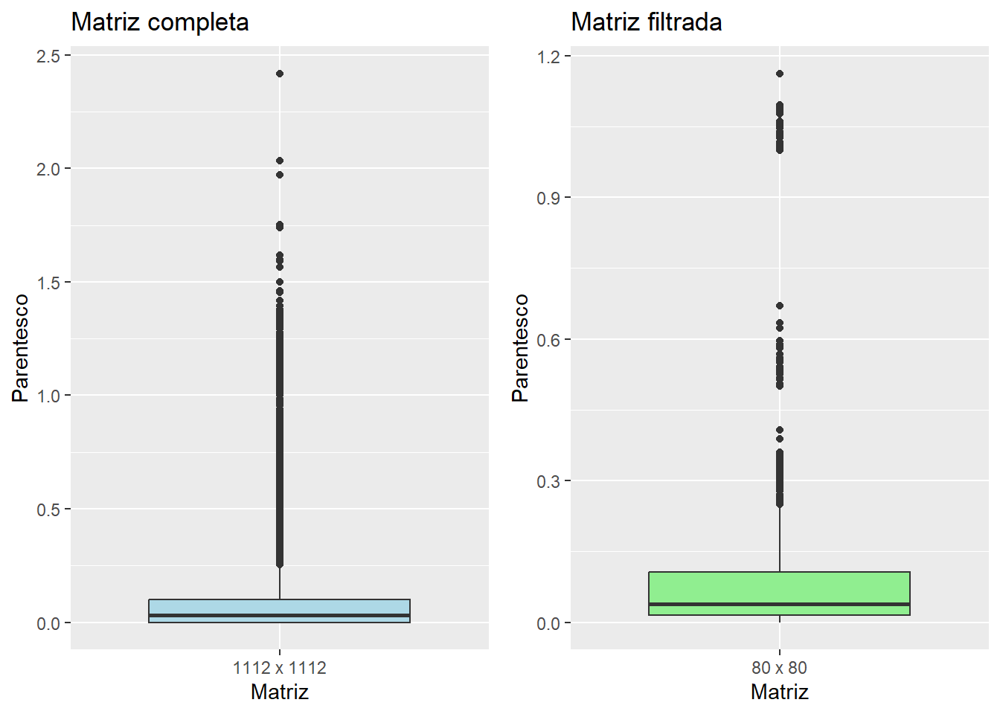
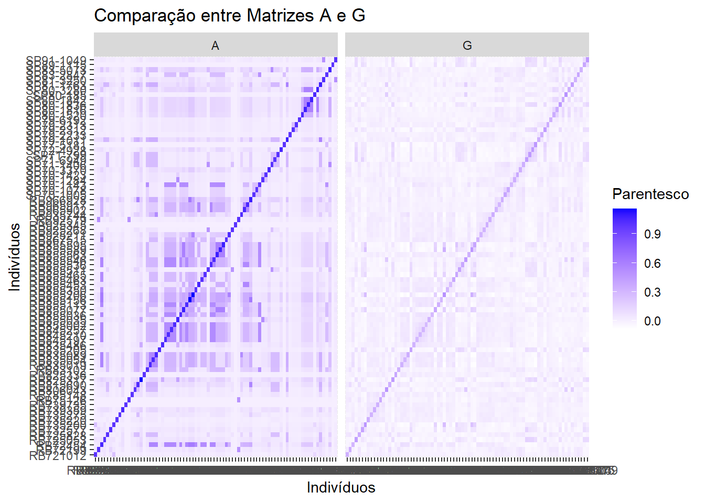
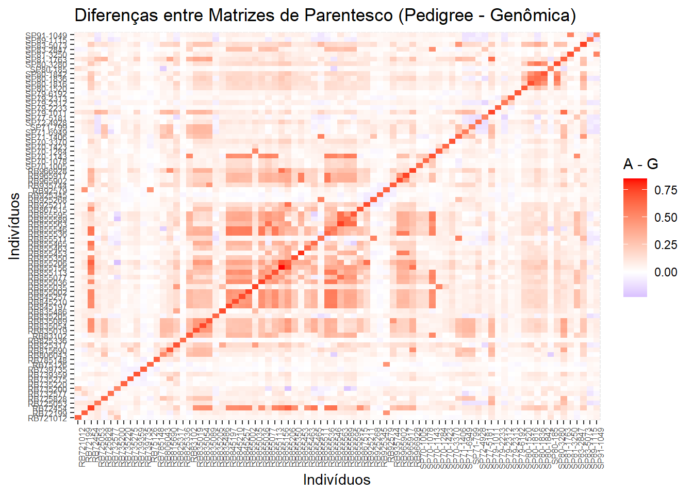

Relatório de Análise no R
Ana Matiussi
Os dados utilizados estão disponíveis no repositório Github, facilitando o acesso e a reprodução dos códigos.
1 Visão geral
Este relatório tem como finalidade apresentar as análises realizadas no R, com objetivo de investigar os efeitos da incorporação de diferentes matrizes de parentesco (pedigree, genômica e combinada) sobre as estimativas de parâmetros genéticos, obtidas por meio de modelos mistos aplicados a dados de cana-de-açúcar. A abordagem visa comparar o desempenho das matrizes A, G e H em termos de precisão e consistência das estimativas.
2 Pacotes
3 Construção e manipulação de matrizes de parentesco
3.1 Dados de Genealogia
# Dados
dat_gen <- read.table("genealogia-sugarcane.csv", header=TRUE, sep=";")
head(dat_gen); tail(dat_gen) # primeiras e últimas n linhas id mom dad
1 Amauritius 0 0
2 Badila 0 0
3 BandHitam 0 0
4 Batjan 0 0
5 BA6032 0 0
6 BJ66210 0 0 id mom dad
1107 RB91518 Co6806 RB72454
1108 RB91520 RB72454 Co6806
1109 RB91522 Co6806 RB72454
1110 RB91523 Co6806 RB72454
1111 RB91524 Co6806 RB72454
1112 RB93531 RB72454 Co68063.1.1 Matriz A
Foram realizados testes com diferentes níveis de ploidia (8x, 10x, 12x) para avaliar o comportamento das matrizes de parentesco. Na matriz de parentesco A, observou-se um leve aumento nos autovalores conforme a ploidia aumentava, enquanto, na matriz G, os valores se mantiveram estáveis independentemente da ploidia utilizada. Como a ploidia exata da população analisada é desconhecida, optou-se por um valor intermediário (10x), que, além de refletir o comportamento geral das matrizes, é biologicamente plausível: o genoma das variedades comerciais é majoritariamente derivado de Saccharum officinarum (2n = 8x = 80) e apresenta número cromossômico variando entre (2n = 100–130), devido à hibridização com outras espécies e à ocorrência de aneuploidias. Isso reforça a escolha de uma ploidia intermediária, como 10x, para representar adequadamente essa complexidade nas análises de parentesco (Oliveira et al., 2023).
# Calcular a Matriz A (dados completos)
matriz_A1 <- Amatrix(dat_gen, ploidy=10, verify=TRUE) # ploidy = XX: Define a ploidia da espécie# Verificar os primeiros elementos da matriz A
matriz_A1[1:5, 1:5] # submatriz 5x5 Amauritius Badila BandHitam Batjan BA6032
Amauritius 1 0 0 0 0
Badila 0 1 0 0 0
BandHitam 0 0 1 0 0
Batjan 0 0 0 1 0
BA6032 0 0 0 0 1# Verificar a dimensão
dim(matriz_A1) # 1112 x 1112 - okA matriz de parentesco A foi inicialmente calculada com base na genealogia completa, totalizando 1.112 genótipos. No entanto, considerando que apenas 80 desses genótipos possuem dados de campo, foi realizada uma filtragem da matriz, resultando em uma submatriz de dimensão 80 x 80.
3.1.2 Filtro da matriz A
# Lista dos 80 genotipos (RB e SP)
genotipos <- read.table("genotipos.txt", header=FALSE, sep="\t", stringsAsFactors = FALSE)
colnames(genotipos)=c("G", "id")
head(genotipos); tail(genotipos)
# Selecionar os IDs
ids <- genotipos$id; ids
# Filtrar a matriz A1 para os 80 indivíduos
matriz_A2 <- matriz_A1[ids, ids]matriz_A2[1:5, 1:5] RB721012 RB72199 RB72454 RB725053 RB725828
RB721012 1.000000000 0.05175781 0.02392578 0.06445312 0.005859375
RB72199 0.051757813 1.00928069 0.05505371 0.06298828 0.023681641
RB72454 0.023925781 0.05505371 1.06065379 0.07421875 0.037109375
RB725053 0.064453125 0.06298828 0.07421875 1.00790895 0.038574219
RB725828 0.005859375 0.02368164 0.03710938 0.03857422 1.001757545dim(matriz_A2) # 80 x 80 - ok3.1.3 Comparação entre matrizes A
Min. 1st Qu. Median Mean 3rd Qu. Max.
0.00000 0.00000 0.03105 0.07130 0.10156 2.41821 Min. 1st Qu. Median Mean 3rd Qu. Max.
0.00000 0.01430 0.03910 0.09939 0.10695 1.16237 # Boxplots
df1 <- data.frame(Parentesco = as.vector(matriz_A1), Matriz = "1112 x 1112")
df2 <- data.frame(Parentesco = as.vector(matriz_A2), Matriz = "80 x 80")
# Plot 1
p1 <- ggplot(df1, aes(x = Matriz, y = Parentesco)) +
geom_boxplot(fill = "lightblue") +
ggtitle("Matriz completa") +
theme_gray()
# Plot 2
p2 <- ggplot(df2, aes(x = Matriz, y = Parentesco)) +
geom_boxplot(fill = "lightgreen") +
ggtitle("Matriz filtrada") +
theme_gray()
grid.arrange(p1, p2, ncol = 2) 
Ao filtrar a matriz para os 80 genótipos, observa-se uma mudança na distribuição dos valores de parentesco. A matriz completa apresentou média de parentesco igual a 0,0713 e mediana de 0,0311, enquanto a matriz filtrada apresentou valores mais elevados, com média de 0,0994 e mediana de 0,0391. O valor máximo, por outro lado, foi reduzido na matriz filtrada (1,16), em comparação com a matriz completa (2,42). Isso ocorre porque a matriz completa inclui todos os genótipos disponíveis, abrangendo indivíduos que podem ser geneticamente muito próximos (parentescos extremos), os quais não foram incluídos nessa seleção filtrada.
3.1.4 Identificação de pares com alto grau de Parentesco
# Os 10 maiores valores de parentesco (para matriz completa e filtrada)
analisar_parentesco <- function(matriz) {
# Converter para formato longo
dados <- melt(as.matrix(matriz), varnames = c("ID1", "ID2"), value.name = "Parentesco")
# Remover autoparentesco e duplicatas
dados <- dados[dados$ID1 != dados$ID2, ] # Remove diagonal
dados <- dados[!duplicated(t(apply(dados[, 1:2], 1, sort))), ] # Remove pares duplicados
# Ordenar do maior para menor parentesco
dados[order(-dados$Parentesco), ]
}
# Análise da matriz completa
top_A1 <- analisar_parentesco(matriz_A1)
head(top_A1, 10) ID1 ID2 Parentesco
284930 CP11-65 CP670 1.972222
285386 CP-1165 CP670 1.972222
286498 CP-1165 CP11-65 1.972222
286486 CP34-79 CP11-65 1.589506
335452 NA63-83 CP43-74 1.565158
283817 CP670 US1484 1.500000
283818 CP11-65 US1484 1.500000
284274 CP-1165 US1484 1.500000
357275 Co326 Co229 1.500000
286066 CP44-101 CP11-65 1.459105# Análise da matriz filtrada
top_A2 <- analisar_parentesco(matriz_A2)
head(top_A2, 10) ID1 ID2 Parentesco
2513 RB855206 RB855156 0.6710316
2532 RB966928 RB855156 0.6337802
192 RB855156 RB72454 0.6233762
193 RB855206 RB72454 0.6233762
2361 RB855563 RB855077 0.5961071
2362 RB855589 RB855077 0.5961071
2363 RB855595 RB855077 0.5961071
3242 RB855589 RB855563 0.5961071
3243 RB855595 RB855563 0.5961071
3323 RB855595 RB855589 0.5961071A redução do valor máximo de parentesco na matriz filtrada é explicada pela ausência de pares altamente relacionados entre os 80 genótipos com dados de campo. Na matriz completa, os pares com maior grau de parentesco incluíam indivíduos como CP11-65, CP670 e CP-1165, com valores superiores a 1,9, indicando relações extremamente próximas, possivelmente clones ou irmãos completos. Já na matriz filtrada, os maiores valores de parentesco variaram entre 0,59 e 0,67, envolvendo genótipos como RB855206, RB855156, RB966928 e RB72454. Esses valores indicam relações de parentesco moderadas, como meio-irmãos ou ancestrais em comum mais distantes. Vale ressaltar que os valores máximos obtidos nas estatísticas descritivas gerais incluem os autoparentescos (diagonal da matriz), que podem apresentar valores superiores a 1. Ao considerar apenas os pares de indivíduos distintos, os maiores valores de parentesco observados foram 1,97 na matriz completa e 0,67 na matriz filtrada.
3.2 Dados de Marcadores SSR
# Dados
dat_ssr <- read.table("marcadores_ssr.txt", heade=TRUE, row.names=1)
head(dat_ssr); tail(dat_ssr)
dim(dat_ssr) # 80 x 1483
# Number of Individuals: 80
# Number of Markers: 14833.2.1 Matriz G
A função Gmatrix() do pacote AGHmatrix inclui o argumento ploidy.correction, que define como o denominador da matriz de parentesco genômico (G) é calculado no método de VanRaden para espécies poliplóides (ploidia > 2). Quando definido como TRUE, o cálculo utiliza uma abordagem paramétrica baseada no nível de ploidia e nas frequências alélicas dos marcadores, conforme descrito por VanRaden (2008) e Endelman et al. (2018). Por outro lado, quando definido como FALSE, o denominador é baseado na variância amostral de cada marcador, refletindo a variabilidade observada nos dados. Essa escolha influencia diretamente a escala e a interpretação da matriz G, sendo importante para análises com espécies que possuem diferentes níveis de ploidia.
Embora os marcadores SSR não forneçam informações de dosagem alélica e o conjunto de dados seja limitado (n = 80), optou-se pela correção paramétrica (ploidy.correction = TRUE) para evitar a subestimação da variância genética nos modelos mistos. Essa abordagem preservou a hierarquia esperada entre as matrizes (H > G > A), enquanto a opção padrão (FALSE) resultou em valores incoerentes (G < A), possivelmente devido à baixa precisão da estimativa da variância amostral em amostras pequenas.
Toda matriz de parentesco (A, G, H) é simétrica e positiva semidefinida:
Matriz Simétrica =Uma matriz é simétrica quando ela é igual à sua transposta. Isso significa que o parentesco entre dois indivíduos \(i\) e \(j\) é o mesmo que o parentesco entre \(j\) e \(i\).Matriz Positiva Semidefinida =Uma matriz é positiva semidefinida se todos os seus autovalores são não negativos (ou seja, maiores ou iguais a zero).
3.2.2 Verificação das matrizes
# Verificar se a matriz A e G é positiva semidefinida e simétrica:
# Extrair os autovalores
valores_A2 <- eigen(matriz_A2)$values; round(valores_A2, 6) [1] 11.100146 4.428074 3.303540 3.091661 2.433944 1.875596 1.708188
[8] 1.615101 1.506869 1.417515 1.381759 1.280163 1.265445 1.219025
[15] 1.154302 1.139229 1.079860 1.060840 1.038401 1.016734 1.003117
[22] 1.000000 1.000000 1.000000 0.995183 0.992755 0.986135 0.969911
[29] 0.954114 0.942601 0.929201 0.917679 0.910427 0.909210 0.900493
[36] 0.849226 0.802995 0.785214 0.750000 0.749780 0.749780 0.749780
[43] 0.749655 0.748387 0.748315 0.748315 0.748315 0.721001 0.666512
[50] 0.641501 0.586212 0.580563 0.557766 0.515487 0.498792 0.498238
[57] 0.498238 0.498238 0.498238 0.498238 0.498238 0.498095 0.497990
[64] 0.497374 0.493320 0.493320 0.493320 0.492943 0.492943 0.492943
[71] 0.482740 0.406113 0.404928 0.382034 0.332995 0.291874 0.265705
[78] 0.200504 0.173173 0.077503 [1] 2.773524 1.425255 1.311169 0.980833 0.769904 0.714314 0.654698 0.603491
[9] 0.547734 0.527674 0.509086 0.488385 0.478333 0.471055 0.451592 0.431403
[17] 0.427384 0.417008 0.409005 0.398391 0.391492 0.383661 0.377426 0.370767
[25] 0.355875 0.349069 0.344797 0.337010 0.332887 0.325658 0.323024 0.312399
[33] 0.309521 0.307127 0.304552 0.297292 0.295759 0.291264 0.286259 0.282421
[41] 0.277411 0.273610 0.269261 0.264047 0.261562 0.258321 0.255894 0.249515
[49] 0.246083 0.244364 0.236308 0.233807 0.230764 0.225480 0.222137 0.216218
[57] 0.213213 0.208240 0.201890 0.198662 0.195540 0.192957 0.190780 0.187176
[65] 0.185041 0.182039 0.179030 0.173778 0.169267 0.167868 0.162011 0.157050
[73] 0.152592 0.148584 0.146384 0.141205 0.139100 0.129673 0.122316 0.000000# Conta quantos autovalores negativos existem (se tiver)
sum(valores_A2 < 0)
sum(valores_G < 0)
# Verificar se a matriz é simétrica
isSymmetric(matriz_A2)
isSymmetric(matriz_G) Problema de Singularidade na Matriz G em Poliploides
Em espécies poliploides, a matriz G pode tornar-se singular, ou seja, não invertível. Isso pode resultar em:
Singularidade:Devido à alta colinearidade entre indivíduos ou marcadores, a matriz G pode se tornar singular, o que aumenta a chance de autovalores próximos de zero, impedindo sua inversão.Simetria:A matriz G deve ser simétrica (G = GT), mas erros numéricos podem comprometer essa propriedade, especialmente em dados de alta dimensionalidade.
Uma solução eficaz é adicionar uma pequena constante (\(λ\)) à diagonal da matriz G, técnica conhecida como regularização (ou Ridge regression). Isso garante que G seja:
Invertível:\(λ\) torna todos os autovalores positivos (> 0), evitando singularidade.Simétrica:Como \(λ\) é adicionado apenas à diagonal, a estrutura da matriz é preservada.
Matematicamente:
\(G^* = G + λI\)
Onde:
G* é a matriz regularizada;
G é a matriz de parentesco original;
\(λ\) é o parâmetro de regularização;
I é a matriz identidade.
3.2.2.1 Regularização
A constante adicionada à diagonal evita que a matriz G seja singular, garantindo que todos os autovalores sejam positivos.
[1] 2.773525 1.425256 1.311170 0.980834 0.769905 0.714315 0.654699 0.603492
[9] 0.547735 0.527675 0.509087 0.488386 0.478334 0.471056 0.451593 0.431404
[17] 0.427385 0.417009 0.409006 0.398392 0.391493 0.383662 0.377427 0.370768
[25] 0.355876 0.349070 0.344798 0.337011 0.332888 0.325659 0.323025 0.312400
[33] 0.309522 0.307128 0.304553 0.297293 0.295760 0.291265 0.286260 0.282422
[41] 0.277412 0.273611 0.269262 0.264048 0.261563 0.258322 0.255895 0.249516
[49] 0.246084 0.244365 0.236309 0.233808 0.230765 0.225481 0.222138 0.216219
[57] 0.213214 0.208241 0.201891 0.198663 0.195541 0.192958 0.190781 0.187177
[65] 0.185042 0.182040 0.179031 0.173779 0.169268 0.167869 0.162012 0.157051
[73] 0.152593 0.148585 0.146385 0.141206 0.139101 0.129674 0.122317 0.000001# último valor da diagonal (> 0) - okdim(matriz_G2) # 80 x 80 - ok
isSymmetric(matriz_G2) # é simétrica - ok
# Matriz A e G ok - matematicamente as matrizes estão corretas e podem ser usadas!3.2.3 Comparação visual das matrizes
# Converter as matrizes em formato longo para visualização
matriz_A_long <- melt(matriz_A2)
matriz_G_long <- melt(matriz_G2)
# Adicionar uma coluna para identificar a matriz de origem
matriz_A_long$Matriz <- "A"
matriz_G_long$Matriz <- "G"
# Combinar as duas matrizes em um único data.frame
matriz_combinada <- rbind(matriz_A_long, matriz_G_long)# Plotar as matrizes lado a lado (comparação)
ggplot(matriz_combinada, aes(x = Var1, y = Var2, fill = value)) +
geom_tile() +
facet_wrap(~ Matriz) +
scale_fill_gradient(low = "white", high = "blue") +
labs(title = "Comparação entre Matrizes A e G", x = "Indivíduos", y = "Indivíduos", fill = "Parentesco") 
A comparação entre as matrizes de parentesco A (pedigree) e G (genômica) revela diferenças na magnitude dos valores de parentesco. A matriz A apresenta cores mais intensas tanto na diagonal quanto fora dela, indicando valores mais elevados e uma estrutura genealógica bem definida. Em contraste, a matriz G exibe tonalidades mais claras em toda sua extensão, o que reflete valores de parentesco geralmente mais baixos. Essa redução na intensidade pode estar associada à limitação dos marcadores SSR utilizados, que, por sua natureza e densidade reduzida, capturam menos variação genômica compartilhada entre os indivíduos. Ainda assim, a preservação da diagonal indica consistência nas autorrelações, e a estrutura geral, embora atenuada, mantém certa semelhança com a matriz A.
# Calcular a diferença entre as matrizes
(diferenca_AG <- matriz_A2 - matriz_G2)
diferenca_df <- melt(diferenca_AG)## Visualizar a matriz de diferenças com heatmap
ggplot(diferenca_df, aes(x = Var1, y = Var2, fill = value)) +
geom_tile() +
scale_fill_gradient2(low = "blue", mid = "white", high = "red", midpoint = 0, limits = c(min(diferenca_df$value), max(diferenca_df$value)), name = "A - G") +
labs(title = "Diferenças entre Matrizes de Parentesco (Pedigree - Genômica)", x = "Indivíduos", y = "Indivíduos") +
theme(axis.text.x = element_text(angle = 90, hjust = 1, size = 6), axis.text.y = element_text(size = 6), legend.position = "right")
O gráfico de diferenças (A - G) evidencia que os valores derivados do pedigree (A) são consistentemente superiores aos da matriz genômica (G), com predomínio de tons vermelhos ao longo da matriz. Essa diferença é mais pronunciada na diagonal e entre indivíduos com algum grau de parentesco, refletindo a tendência da matriz A em atribuir valores mais altos, enquanto a matriz G, construída a partir de marcadores SSR, resulta em estimativas mais conservadoras. Isso sugere que a matriz genômica está capturando uma proporção menor da variabilidade genética esperada, o que pode estar relacionado à natureza dos dados moleculares utilizados. Mesmo assim, os padrões de agrupamento presentes nas diferenças indicam que ambas as matrizes compartilham informações estruturais sobre as relações entre os indivíduos.
3.3 Matriz H para cada combinação de \(\tau\) e \(\omega\)
Como alternativa à validação cruzada proposta por Amadeu et al. (2023) para avaliar o impacto dos pesos na capacidade preditiva, consideraram-se duas estratégias diferentes:
Grid Search (busca exaustiva):testa todas as combinações possíveis de \(\tau\) e \(\omega\) dentro de uma grade predefinida; eOtimização Bayesiana (processo iterativo):explora o espaço de parâmetros de forma mais inteligente, priorizando regiões mais promissoras.
Para o cálculo da matriz H nos dois procedimentos, foi necessário calcular a média dos valores fenotípicos entre cortes para cada genótipo, uma vez que a análise requer um único valor por indivíduo, sem repetições.
3.3.1 Dados fenotípicos
# Carregar os dados fenotípicos
dat_fen=read.table("fenotipo.csv", header=TRUE, sep=";"); head(dat_fen); tail(dat_fen)
dat_fen$tph <- as.numeric(gsub(",", ".", dat_fen$tph)) # Criar um data.frame
pheno_df <- data.frame(
geno = names(pheno_data),
Y = pheno_data
)
head(pheno_df); tail(pheno_df)# Alterar o nome dos genótipos
pheno_df <- pheno_df %>%
left_join(genotipos, by = c("geno" = "G")) %>%
mutate(geno = id) %>%
select(-id)
head(pheno_df); tail(pheno_df) geno Y
1 RB721012 13.358333
2 RB72199 23.000000
3 RB72454 30.664167
4 RB725053 18.668333
5 RB725828 9.869091
6 RB732577 16.317500 geno Y
75 SP81-1763 23.04250
76 SP81-3250 16.69636
77 SP83-2847 25.33333
78 SP83-5073 20.70833
79 SP89-1115 22.66167
80 SP91-1049 24.86333Segundo Martini et al. (2018), é preciso avaliar cada combinação de \(\tau\) e \(\omega\) em termos de:
Capacidade Preditiva:Correlação entre fenótipos observados e valores preditos;Inflação:Inclinação da regressão dos fenótipos observados em relação aos valores preditos;Erro Quadrático Médio (MSE):usada para avaliar a qualidade de um modelo de predição (um modelo com menor MSE é considerado melhor, pois tem erros menores nas predições).
Definição geral dos parâmetros na Matriz H: A matriz no método Martini et al. (2018) combina as seguintes informações:
\({H}_{22}=(\tau G^{-1}+(1-\omega){A}_{22}^{-1})^{-1}\)
Em que:
\(\tau\): Controla o peso da matriz genômica (G)
\(\omega\): Controla o peso da matriz de pedigree (A)
Os parâmetros são usados para melhorar a convergência e reduzir inflação nas predições.
3.3.2 Grid Search (Método 1)
# Lista para armazenar as matrizes H
H_matrizes <- list()
# Criar uma lista para armazenar os resultados
results <- data.frame()
# Iterar sobre as combinações de tau e omega
for (tau in tau_values) {
for (omega in omega_values) {
# Calcular a matriz H com os parâmetros tau e omega
H <- Hmatrix(A = matriz_A2, G = matriz_G2, tau = tau, omega = omega, method = "Martini")
# Forçar simetria na matriz H
H_sym <- (H + t(H)) / 2
# o método "Martini" pode introduzir assimetrias se as matrizes A e G não estiverem perfeitamente alinhadas
# Armazenar a matriz H na lista
H_matrizes[[paste("tau", tau, "omega", omega, sep = "_")]] <- H_sym
# length(H_matrizes) # 420 combinações de tau e omega - ok
# Ajustar o modelo misto usando a matriz H
model <- mmer(Y ~ 1, random = ~ vsr(geno, Gu = H_sym), rcov = ~ units, data = pheno_df)
#summary(model)
# Obter os valores preditos
predicted_values <- predict(model, D = "geno")$pval
blups <- predicted_values$predicted.value
# Calcular a capacidade preditiva (correlação entre observado e predito)
predictive_ability <- cor(pheno_df$Y, blups[match(pheno_df$geno, predicted_values$geno)])
# Calcular a inflação (coeficiente de regressão)
inflation <- coef(lm(pheno_df$Y ~ blups[match(pheno_df$geno, predicted_values$geno)]))[2]
# Calcular o Erro Quadrático Médio (MSE) para cada combinação de tau e omega
mse <- mean((pheno_df$Y - blups[match(pheno_df$geno, predicted_values$geno)])^2)
# Armazenar os resultados
results <- rbind(results, data.frame(
tau = tau,
omega = omega,
predictive_ability = predictive_ability,
inflation = inflation,
mse = mse,
row.names = NULL # remove os nomes das linhas
))
}
} tau omega predictive_ability inflation mse
1 0.1 -1.0 0.9637358 1.799731 10.923778
2 0.1 -0.9 0.9648356 1.784018 10.677996
3 0.1 -0.8 0.9659983 1.767202 10.413721
4 0.1 -0.7 0.9672289 1.749165 10.128901
5 0.1 -0.6 0.9685330 1.729776 9.821190
6 0.1 -0.5 0.9699166 1.708882 9.487902 tau omega predictive_ability inflation mse
415 2 0.5 0.9985690 1.109809 0.5415271
416 2 0.6 0.9983635 1.117411 0.6124451
417 2 0.7 0.9981016 1.126479 0.7015628
418 2 0.8 0.9977659 1.137286 0.8138964
419 2 0.9 0.9973318 1.150198 0.9563650
420 2 1.0 0.9967618 1.165773 1.1393667# Adicionar uma coluna "is_best" para indicar as melhores combinações
# Definir um limite para considerar uma combinação como "melhor"
threshold_predictive_ability <- 0.95 * max(results$predictive_ability) # 95% da capacidade preditiva máxima
threshold_inflation <- 1.1 # Inflação máxima de 1.1# Criar a coluna "is_best"
results$is_best <- results$predictive_ability >= threshold_predictive_ability & results$inflation <= threshold_inflation
head(results); tail(results) tau omega predictive_ability inflation mse is_best
1 0.1 -1.0 0.9637358 1.799731 10.923778 FALSE
2 0.1 -0.9 0.9648356 1.784018 10.677996 FALSE
3 0.1 -0.8 0.9659983 1.767202 10.413721 FALSE
4 0.1 -0.7 0.9672289 1.749165 10.128901 FALSE
5 0.1 -0.6 0.9685330 1.729776 9.821190 FALSE
6 0.1 -0.5 0.9699166 1.708882 9.487902 FALSE tau omega predictive_ability inflation mse is_best
415 2 0.5 0.9985690 1.109809 0.5415271 FALSE
416 2 0.6 0.9983635 1.117411 0.6124451 FALSE
417 2 0.7 0.9981016 1.126479 0.7015628 FALSE
418 2 0.8 0.9977659 1.137286 0.8138964 FALSE
419 2 0.9 0.9973318 1.150198 0.9563650 FALSE
420 2 1.0 0.9967618 1.165773 1.1393667 FALSE# Filtrar apenas as combinações onde is_best é TRUE
best_combinations <- subset(results, is_best == TRUE)
head(best_combinations); tail(best_combinations) tau omega predictive_ability inflation mse is_best
20 0.1 0.9 0.9990782 1.090142 0.3718745 TRUE
40 0.2 0.8 0.9990782 1.090142 0.3718750 TRUE
41 0.2 0.9 0.9990903 1.087922 0.3577310 TRUE
60 0.3 0.7 0.9990782 1.090142 0.3718750 TRUE
61 0.3 0.8 0.9991835 1.083709 0.3256001 TRUE
62 0.3 0.9 0.9988184 1.099869 0.4542295 TRUE tau omega predictive_ability inflation mse is_best
408 2 -0.2 0.9991619 1.084632 0.3326684 TRUE
409 2 -0.1 0.9991327 1.085968 0.3427933 TRUE
410 2 0.0 0.9990903 1.087922 0.3577309 TRUE
411 2 0.1 0.9990325 1.090563 0.3782737 TRUE
412 2 0.2 0.9989562 1.093971 0.4054337 TRUE
413 2 0.3 0.9988573 1.098238 0.4405060 TRUE# Selecionar a combinação com a maior capacidade preditiva
(best_combination <- best_combinations[which.max(best_combinations$predictive_ability), ]) tau omega predictive_ability inflation mse is_best
365 1.8 -0.3 0.9991887 1.083608 0.3245938 TRUEFim da análise Grid Search! Agora que temos a melhor combinação de parâmetros, podemos calcular a matriz H com a inclusão dos pesos (parâmetros).
# Calcular a matriz H
matriz_H=Hmatrix(matriz_A2, matriz_G2, tau=1.8, omega=-0.3, method="Martini") %>%
{(. + t(.))/2} # Simetrização [1] 0.459643 0.411577 0.362517 0.303356 0.283831 0.274708 0.249901 0.230136
[9] 0.210752 0.203709 0.201760 0.196258 0.191352 0.182453 0.177608 0.176284
[17] 0.173716 0.172124 0.168836 0.164142 0.160997 0.159257 0.150870 0.150473
[25] 0.147896 0.146501 0.144749 0.141374 0.140249 0.138679 0.134992 0.132150
[33] 0.131806 0.128365 0.127520 0.126629 0.125042 0.123179 0.121325 0.120001
[41] 0.118140 0.117024 0.116506 0.114831 0.114606 0.111578 0.109824 0.107613
[49] 0.106847 0.104555 0.103821 0.101077 0.100297 0.098822 0.097379 0.096186
[57] 0.092987 0.091854 0.088447 0.087828 0.087251 0.085262 0.084077 0.082992
[65] 0.080916 0.079607 0.077838 0.076851 0.074886 0.073407 0.071799 0.070192
[73] 0.068282 0.067062 0.066530 0.061348 0.057163 0.053635 0.037995 0.000001# Verificar se a matriz é simétrica
isSymmetric(matriz_H)[1] TRUE3.3.3 Otimização bayesiana (Método 2)
# Criar uma lista para armazenar os resultados
results_bayes <- data.frame()
# Função objetivo para otimização bayesiana
objective_function <- function(tau, omega) {
# Calcular a matriz H com os parâmetros tau e omega
H <- Hmatrix(A = matriz_A2, G = matriz_G2, tau = tau, omega = omega, method = "Martini")
# Forçar simetria na matriz H
H_sym <- (H + t(H)) / 2
# Ajustar o modelo misto usando a matriz H_sym
model <- mmer(Y ~ 1, random = ~ vsr(geno, Gu = H_sym), rcov = ~ units, data = pheno_df)
# Obter os valores preditos
predicted_values <- predict(model, D = "geno")$pval
blups <- predicted_values$predicted.value
# Calcular a capacidade preditiva (correlação entre observado e predito)
predictive_ability <- cor(pheno_df$Y, blups[match(pheno_df$geno, predicted_values$geno)])
# Calcular a inflação (coeficiente de regressão)
inflation <- coef(lm(pheno_df$Y ~ blups[match(pheno_df$geno, predicted_values$geno)]))[2]
# Calcular o Erro Quadrático Médio (MSE)
mse <- mean((pheno_df$Y - blups[match(pheno_df$geno, predicted_values$geno)])^2)
# Armazenar os resultados na tabela
results_bayes <<- rbind(results_bayes, data.frame(
tau = tau,
omega = omega,
predictive_ability = predictive_ability,
inflation = inflation,
mse = mse
))
# Retornar a capacidade preditiva como métrica a ser maximizada
return(list(Score = predictive_ability, Pred = inflation))
}
# Definir os limites para tau e omega
bounds <- list(tau = c(0.1, 2.0), # tau entre 0.1 e 2.0
omega = c(-1.0, 1.0)) # omega entre -1.0 e 1.0
# Executar a otimização bayesiana
set.seed(123) # Definir semente para reprodutibilidade
bayes_opt <- BayesianOptimization(
FUN = objective_function, # Função objetivo
bounds = bounds, # Limites dos parâmetros
init_points = 10, # Número de pontos iniciais aleatórios para explorar o espaço de busca
n_iter = 20, # Número de iterações após os pontos iniciais
acq = "ucb", # Função de aquisição (Upper Confidence Bound)
kappa = 2.576, # Parâmetro de exploração (default) - Valores maiores exploram mais
verbose = TRUE # Mostrar progresso
)
# Resultados da otimização
bayes_optrownames(results_bayes_rounded) <- NULL; results_bayes_rounded tau omega predictive_ability inflation mse
1 0.6 0.9 0.9980004 1.129825 0.7356442
2 1.6 -0.1 0.9991864 1.083615 0.3248298
3 0.9 0.4 0.9991883 1.083665 0.3249406
4 1.8 0.1 0.9990701 1.088851 0.3649068
5 1.9 -0.8 0.9991119 1.088283 0.3580059
6 0.2 0.8 0.9990175 1.093383 0.3966109
7 1.1 -0.5 0.9986740 1.110098 0.5346158
8 1.8 -0.9 0.9990237 1.093058 0.3940974
9 1.1 -0.3 0.9989208 1.098336 0.4357335
10 1.0 0.9 0.9977199 1.138705 0.8291190
11 0.1 -0.1 0.9780974 1.577643 7.3614097
12 2.0 1.0 0.9967618 1.165773 1.1393667
13 0.1 -1.0 0.9637358 1.799731 10.9237783
14 1.6 1.0 0.9967620 1.165765 1.1392726
15 1.3 -1.0 0.9983248 1.125206 0.6730813
16 1.5 0.5 0.9987475 1.102786 0.4791953
17 0.1 1.0 0.9967657 1.165658 1.1380100
18 1.5 -0.7 0.9989816 1.095252 0.4111865
19 2.0 -1.0 0.9990782 1.090142 0.3718746
20 2.0 -0.2 0.9991621 1.084623 0.3326045
21 0.5 0.6 0.9991881 1.083579 0.3244752
22 1.2 0.3 0.9991568 1.084862 0.3344116
23 0.9 0.6 0.9990340 1.090498 0.3777647
24 2.0 0.5 0.9986280 1.107536 0.5210130
25 1.8 -0.4 0.9991859 1.083878 0.3263529
26 0.1 0.7 0.9956181 1.215406 1.7110256
27 0.3 1.0 0.9978523 1.134581 0.7851728
28 0.7 -1.0 0.9951599 1.228234 1.8814922
29 0.7 0.0 0.9984443 1.120201 0.6258459
30 0.9 -1.0 0.9969746 1.174206 1.1978608# Extrair os melhores parâmetros
(best_tau <- round(bayes_opt$Best_Par["tau"], 1))tau
0.9 (best_omega <- round(bayes_opt$Best_Par["omega"], 1))omega
0.4 # Extrair a capacidade preditiva e a inflação
(best_predictive_ability <- bayes_opt$Best_Value)
(best_inflation <- bayes_opt$Pred)Fim da análise da Otimização bayesiana! Agora que temos a melhor combinação de parâmetros, podemos calcular a matriz H.
# Calcular a matriz H com os melhores parâmetros
matriz_H2 <- Hmatrix(matriz_A2, matriz_G2, tau = best_tau, omega = best_omega, method = "Martini") %>%
{(. + t(.))/2} # Simetrização [1] 0.955994 0.855035 0.748288 0.624092 0.582378 0.562454 0.512676 0.470712
[9] 0.430619 0.416338 0.412396 0.400226 0.390265 0.372246 0.362598 0.359868
[17] 0.353817 0.351137 0.344137 0.334838 0.328007 0.324544 0.308043 0.306590
[25] 0.301000 0.298024 0.295115 0.288119 0.285673 0.282117 0.274685 0.269007
[33] 0.268137 0.261011 0.259474 0.257912 0.254439 0.251067 0.246755 0.244436
[41] 0.240472 0.238078 0.237205 0.233366 0.233041 0.227288 0.223080 0.218719
[49] 0.217079 0.212794 0.211577 0.205127 0.203554 0.200560 0.198636 0.195955
[57] 0.188931 0.186215 0.179526 0.178583 0.177440 0.173245 0.170601 0.168655
[65] 0.164350 0.161789 0.158053 0.156321 0.151985 0.149210 0.146137 0.142804
[73] 0.138689 0.136060 0.134908 0.125197 0.116034 0.110073 0.079724 0.000001# Verificar se a matriz é simétrica
isSymmetric(matriz_H2)[1] TRUE3.3.4 Comparação de resultados das duas abordagens
# Melhores resultados do Grid Search
(best_grid_search <- results[which.max(results$predictive_ability), ]) # tau = 1.8; omega = -0.3 tau omega predictive_ability inflation mse is_best
365 1.8 -0.3 0.9991887 1.083608 0.3245938 TRUE# Melhores resultados da Otimização Bayesiana
(best_bayes_opt <- results_bayes_rounded[which.max(history_bayes$Value), ]) # tau = 0.9; omega = 0.4 tau omega predictive_ability inflation mse
3 0.9 0.4 0.9991883 1.083665 0.3249406De acordo com Martini et al. (2018), diferentes combinações de parâmetros podem levar a desempenhos preditivos semelhantes. Os autores observaram que múltiplas configurações podem apresentar desempenhos estatísticos equivalentes. Os resultados das duas abordagens avaliadas confirmam essa observação: diferentes combinações produzem resultados similares.
No Grid Search, das 420 combinações avaliadas, 72 combinações distintas que atenderam aos critérios de melhor ajuste (is_best == TRUE). Já na Otimização Bayesiana, também foram encontradas várias combinações com desempenho semelhantes, totalizando 30 combinações diferentes. Essa diferença quantitativa reflete a natureza dos métodos: enquanto o Grid Search realiza uma varredura exaustiva no espaço de parâmetros, a Otimização Bayesiana adota uma estratégia mais eficiente, concentrando-se em regiões mais promissoras.
Mas qual abordagem é melhor?
A interpretação dos parâmetros (\(\tau\)) e (\(\omega\)) nas duas combinações encontradas revela estratégias distintas de ponderação entre as informações genômicas e de pedigree, como é observado na tabela abaixo:
| Método | Grid Search | Otimização Bayesiana |
| Combinação | \(\tau\) = 1,8; \(\omega\) = -0,3 | \(\tau\) = 0,9; \(\omega\) = 0,4 |
| Desempenho Preditivo | 0.9991887 | 0.9991883 |
| Complexidade | Alta (valores extremos, \(\omega\) negativo) | Moderada (equilíbrio entre genômica e pedigree) |
| Risco | Potencial de overfitting devido a \(\tau\) elevado e \(\omega\) negativo | Menor risco, parâmetros mais conservadores |
Ambas as abordagens mantêm a predominância da matriz genômica sobre a de pedigree, mas com diferenças significativas na ponderação. A solução obtida via Grid Search apresenta valores mais extremos, com peso elevado para a informação genômica e um valor negativo para o parâmetro de pedigree. Nesse caso, o valor negativo de \(\omega\) amplia a contribuição do pedigree (A22) em 30% (1 - \(\omega\) = 1 - (-0,3) = 1 + 0,3 = 1,3) na construção da matriz H22, atuando como fator de balanceamento para evitar superestimativas. Embora essa configuração seja matematicamente válida e possa ajudar a reduzir a inflação nas predições, conforme demonstrado por Martini et al. (2018), ela também introduz maior complexidade ao modelo e aumenta o risco de overfitting, especialmente em situações onde há maior incerteza nos dados genômicos.
Por outro lado, a solução obtida através da Otimização Bayesiana oferece um equilíbrio mais conservador entre as fontes de informação. O valor de \(\tau\) próximo a 1 mantém a matriz genômica em sua escala original, enquanto \(\omega\) = 0,4 resulta em uma redução moderada de 40% da contribuição do pedigree, equivalente a 60% do peso original (1 - \(\omega\) = 1 - 0,4 = 0,6). Essa configuração mostra-se mais estável e menos suscetível a problemas de superajuste.
Considerando o princípio da parcimônia, o equilíbrio entre as fontes de informação e o uso de valores moderados, a combinação obtida pela Otimização Bayesiana se mostra como a escolha mais adequada para este caso, reduzindo riscos de superajuste e alinhando-se melhor às implementações do método single-step.
4 Estimativas e Modelos Mistos
4.1 Abordagem Single-Step
Nesta etapa, foi realizada uma análise conjunta dos diferentes cortes por meio de modelos mistos, incorporando as matrizes de parentesco (A, G, H). Foram testadas diferentes estruturas de variância-covariância para os efeitos genéticos (id, A, G, H) e para os efeitos residuais (id, diag, un), permitindo avaliar simultaneamente a influência da estrutura genética e da heterogeneidade residual nas estimativas de variância.
# Dados
map <- setNames(genotipos$id, genotipos$G) # Cria um vetor de "mapeamento"
dat_fen$geno <- map[dat_fen$geno]
head(dat_fen); tail(dat_fen) corte bloco geno tph
1 1 1 RB721012 18.09
2 1 2 RB721012 13.50
3 1 3 RB721012 24.06
4 1 4 RB721012 14.72
5 1 1 RB72199 28.42
6 1 2 RB72199 NA corte bloco geno tph
955 3 3 SP89-1115 5.74
956 3 4 SP89-1115 13.79
957 3 1 SP91-1049 7.42
958 3 2 SP91-1049 10.58
959 3 3 SP91-1049 5.47
960 3 4 SP91-1049 20.97Modelo base: \(y_{ijk} = \mu + g_i + b_j + c_k + gb_{ij} + gc_{ik} + e_{ijk}\)
modelo_base <- mmer(tph ~ geno + bloco + corte, random = ~ geno:bloco + geno:corte, rcov = ~ vsr(units), data = dat_fen)summary(modelo_base)$varcomp VarComp VarCompSE Zratio Constraint
geno:bloco.tph-tph 9.008278 2.131289 4.226682 Positive
geno:corte.tph-tph 8.961850 2.148393 4.171420 Positive
u:units.tph-tph 36.519936 2.394428 15.252051 PositiveApós ajustar o modelo base, foi substituído o efeito aleatório simples de Geno pelas matrizes de parentesco (A, G e H). Além disso, testaram-se diferentes estruturas VCOV para Corte e Geno:
Efeito de genótipos modelado pela matriz A -> random = ~ vsr(Geno, Gu = A)
Efeito de genótipos modelado pela matriz G -> random = ~ vsr(Geno, Gu = G)
Efeito de genótipos modelado pela matriz H -> random = ~ vsr(Geno, Gu = H)
A <- matriz_A2 # 80x80
G <- matriz_G2 # 80x80
H <- matriz_H2 # 80x80 -> matriz H do método Otimização Bayesiana4.1.1 Teste de modelos e estruturas VCOV
# G = id, R = id (genótipos com variâncias iguais; resíduos com variâncias iguais)
mm1 <- mmer(tph ~ bloco + corte, random = ~ vsr(isc(geno)) + geno:bloco + geno:corte, rcov = ~ vsr(units), data = dat_fen)
# G = A, R = id (genótipos modelados pela matriz A; resíduos com variâncias iguais)
mm2 <- mmer(tph ~ bloco + corte, random = ~ vsr(geno, Gu = A) + geno:bloco + geno:corte, rcov = ~ vsr(units), data = dat_fen)
# G = G, R = id (genótipos modelados pela matriz G; resíduos com variâncias iguais)
mm3 <- mmer(tph ~ bloco + corte, random = ~ vsr(geno, Gu = G) + geno:bloco + geno:corte, rcov = ~ vsr(units), data = dat_fen)
# G = H, R = id (genótipos modelados pela matriz H; resíduos com variâncias iguais)
mm4 <- mmer(tph ~ bloco + corte, random = ~ vsr(geno, Gu = H) + geno:bloco + geno:corte, rcov = ~ vsr(units), data = dat_fen)
# G = id, R = diag (genótipos com variâncias iguais; resíduos com variâncias diferentes)
mm5 <- mmer(tph ~ bloco + corte, random = ~ vsr(isc(geno)) + geno:bloco + geno:corte, rcov = ~ vsr(dsr(corte), units), data = dat_fen)
# G = A, R = diag (genótipos modelados pela matriz A; resíduos com variâncias diferentes)
mm6 <- mmer(tph ~ bloco + corte, random = ~ vsr(geno, Gu = A) + geno:bloco + geno:corte, rcov = ~ vsr(dsr(corte), units), data = dat_fen)
# G = G, R = diag (genótipos modelados pela matriz G; resíduos com variâncias diferentes)
mm7 <- mmer(tph ~ bloco + corte, random = ~ vsr(geno, Gu = G) + geno:bloco + geno:corte, rcov = ~ vsr(dsr(corte), units), data = dat_fen)
# G = H, R = diag (genótipos modelados pela matriz H; resíduos com variâncias diferentes)
mm8 <- mmer(tph ~ bloco + corte, random = ~ vsr(geno, Gu = H) + geno:bloco + geno:corte, rcov = ~ vsr(dsr(corte), units), data = dat_fen)
# G = id, R = un (genótipos com variâncias iguais; resíduos com variâncias e covariâncias diferentes)
mm9 <- mmer(tph ~ bloco + corte, random = ~ vsr(isc(geno)) + geno:bloco + geno:corte, rcov = ~ vsr(usr(corte), units), data = dat_fen)
# G = A, R = un (genótipos modelados pela matriz A; resíduos com variâncias e covariâncias diferentes)
mm10 <- mmer(tph ~ bloco + corte, random = ~ vsr(geno, Gu = A) + geno:bloco + geno:corte, rcov = ~ vsr(usr(corte), units), data = dat_fen)
# G = G, R = un (genótipos modelados pela matriz G; resíduos com variâncias e covariâncias diferentes)
mm11 <- mmer(tph ~ bloco + corte, random = ~ vsr(geno, Gu = G) + geno:bloco + geno:corte, rcov = ~ vsr(usr(corte), units), data = dat_fen)
# G = H, R = un (genótipos modelados pela matriz H; resíduos com variâncias e covariâncias diferentes)
mm12 <- mmer(tph ~ bloco + corte, random = ~ vsr(geno, Gu = H) + geno:bloco + geno:corte, rcov = ~ vsr(usr(corte), units), data = dat_fen)# Variâncias Genéticas -> (u:geno.tph-tph)
summary(mm1)$varcomp # G = id ; R = id
summary(mm2)$varcomp # G = A ; R = id
summary(mm3)$varcomp # G = G ; R = id
summary(mm4)$varcomp # G = H ; R = id
summary(mm5)$varcomp # G = id ; R = diag
summary(mm6)$varcomp # G = A ; R = diag
summary(mm7)$varcomp # G = G ; R = diag
summary(mm8)$varcomp # G = H ; R = diag
summary(mm9)$varcomp # G = id ; R = un
summary(mm10)$varcomp # G = A ; R = un
summary(mm11)$varcomp # G = G ; R = un
summary(mm12)$varcomp # G = H ; R = unOs resultados demonstraram que a matriz híbrida (H) proporcionou um aumento significativo na estimativa da variância genética em comparação com as matrizes A e G, independentemente da estrutura de variância residual adotada. Isso indica que a integração de informações de pedigree com dados moleculares (SSR) permite capturar uma parcela maior da variabilidade genética. Em contraste, a matriz de pedigree (A) isoladamente apresentou a menor capacidade de explicação da variação genética entre os genótipos avaliados.
Para R = id
| Fonte de Variação | G=A | G=G | G=H |
|---|---|---|---|
| Genótipo | 41.97 (8.64) | 101.79 (21.08) | 121.101 (25.00) |
| Genótipo:Bloco | 9.19 (2.14) | 8.98 (2.12) | 8.97 (2.12) |
| Genótipo:Corte | 9.23 (2.16) | 8.97 (2.14) | 8.95 (2.14) |
| Resíduo | 36.44 (2.38) | 36.51 (2.39) | 36.52 (2.39) |
Quando considerada uma estrutura residual homogênea, observou-se que a matriz H proporcionou a maior estimativa de variância genética entre os genótipos (121.10), seguida pela matriz G (101.79) e, por último, pela matriz A (41.98). Esses resultados indicam que a matriz H, ao integrar informações de pedigree e marcadores moleculares, permite capturar uma porção mais ampla da variabilidade genética. A variância residual permaneceu praticamente constante entre os modelos (~36.5), o que reforça que as diferenças observadas nas variâncias genéticas são atribuídas à matriz de parentesco utilizada.
Para R = Diag
| Fonte de Variação | G=A | G=G | G=H |
|---|---|---|---|
| Genótipo | 37.46 (7.84) | 90.69 (19.10) | 107.99 (22.67) |
| Genótipo:Bloco | 7.55 (1.96) | 7.35 (1.94) | 7.34 (1.94) |
| Genótipo:Corte | 9.36 (2.18) | 9.06 (2.15) | 9.05 (2.15) |
| Resíduo-Corte1 | 47.43 (4.84) | 47.47 (4.83) | 47.45 (4.83) |
| Resíduo-Corte2 | 43.65 (4.48) | 43.87 (4.49) | 43.87 (4.49) |
| Resíduo-Corte3 | 22.95 (2.84) | 23.00 (2.84) | 23.02 (2.84) |
Ao permitir heterogeneidade entre os cortes, os modelos continuaram apresentando o mesmo padrão quanto à variância genética: H (107.99) > G (90.70) > A (37.47). A modelagem da estrutura residual com variâncias específicas por corte não alterou significativamente o comportamento dos componentes genéticos, mas permitiu observar variações residuais entre os cortes, com valores maiores nos dois primeiros cortes (~47 e ~44) e menores no terceiro (~23). Isso sugere que os dois primeiros cortes apresentaram maior variabilidade não explicada, possivelmente associada a condições ambientais menos estáveis ou a menor precisão nas medições iniciais.
Para R = un
| Fonte de Variação | G=A | G=G | G=H |
|---|---|---|---|
| Genótipo | 37.46 (7.84) | 90.69 (1.91) | 107.99 (2.26) |
| Genótipo:Bloco | 7.55 (1.96) | 7.35 (1.94) | 7.34 (1.94) |
| Genótipo:Corte | 9.36 (2.18) | 9.06 (2.15) | 9.05 (2.15) |
| Resíduo-Corte1 | 47.43 (4.84) | 47.47 (4.83) | 47.45 (4.83) |
| Covariância-Corte 2:1 | 21.09 (1.88) | 21.98 (7.04) | 22.22 (1.19) |
| Resíduo-Corte2 | 43.65 (4.48) | 43.87 (4.49) | 43.87 (4.49) |
| Covariância-Corte 3:1 | 21.09 (00.00) | 21.98 (00.00) | 22.22 (00.00) |
| Covariância-Corte 3:2 | 21.09 (00.00) | 21.98 (00.00) | 22.22 (00.00) |
| Resíduo-Corte3 | 22.95 (2.84) | 23.00 (2.84) | 23.02 (2.84) |
Com a introdução de uma estrutura residual não estruturada, que considera não apenas variâncias diferentes entre os cortes, mas também suas covariâncias, o padrão de variância genética permaneceu consistente: H (107.99) > G (90.70) > A (37.47). As estimativas de covariância entre os cortes foram iguais (~22), com erro padrão igual a zero. Isso sugere que essas covariâncias podem não ser estatisticamente significativas, ou que o modelo não conseguiu estimar a incerteza dessas covariâncias. A matriz H seguiu destacando-se por capturar maior proporção da variabilidade genética, mesmo com o aumento da complexidade no componente residual. Isso evidencia que a matriz híbrida é informativa mesmo em cenários mais realistas e complexos de modelagem.
4.1.2 Tabela de comparação de modelos
# Lista de modelos ajustados
modelos <- list(mm1, mm2, mm3, mm4, mm5, mm6, mm7, mm8, mm9, mm10, mm11, mm12)
# Nomes dos modelos (estruturas VCOVs e Matrizes)
nomes_modelos <- c(
"R=id, G=id", "R=id, G=A", "R=id, G=G", "R=id, G=H",
"R=diag, G=id", "R=diag, G=A", "R=diag, G=G", "R=diag, G=H",
"R=un, G=id", "R=un, G=A", "R=un, G=G", "R=un, G=H")# Extrair AIC e BIC de cada modelo
AIC_values <- sapply(modelos, function(x) x$AIC)
BIC_values <- sapply(modelos, function(x) x$BIC)
# Criar a tabela de comparação
comparison <- data.frame(
Modelo = nomes_modelos,
AIC = AIC_values,
BIC = BIC_values)# Criar a tabela simples com kable
(tabela <- kable(comparison, align = "c", caption = "Comparação de Modelos (AIC e BIC)")) # small is better| Modelo | AIC | BIC |
|---|---|---|
| R=id, G=id | -20.82860 | 8.2530538 |
| R=id, G=A | -22.47180 | 6.6098611 |
| R=id, G=G | -28.97385 | 0.1078114 |
| R=id, G=H | -29.99117 | -0.9095070 |
| R=diag, G=id | -43.52790 | -14.4462432 |
| R=diag, G=A | -43.92598 | -14.8443163 |
| R=diag, G=G | -50.65313 | -21.5714712 |
| R=diag, G=H | -51.60011 | -22.5184486 |
| R=un, G=id | -43.52790 | -14.4462432 |
| R=un, G=A | -43.92598 | -14.8443163 |
| R=un, G=G | -50.65313 | -21.5714712 |
| R=un, G=H | -51.60011 | -22.5184486 |
# R=diag, G=A equivalentes com R=un, G=A
# R=diag, G=G equivalentes com R=un, G=G
# R=diag, G=H equivalentes com R=un, G=HCom base nos critérios de informação AIC e BIC, os modelos que utilizam a matriz H para o efeito genético e a estrutura diagonal (diag) para os resíduos apresentaram o melhor ajuste aos dados. Observa-se que os modelos com R = diag são equivalentes aos respectivos modelos com R = un, sugerindo que o uso de uma estrutura mais simples para os resíduos (diag) é suficiente para capturar a variabilidade, sem perda de qualidade no ajuste.
Seguindo o princípio da parcimônia, opta-se por modelos com R = diag, que são mais simples e computacionalmente eficientes. A matriz H destacou-se como a mais informativa para modelar os efeitos genéticos, reforçando a vantagem da combinação entre pedigree e marcadores moleculares.
4.2 Abordagem Two-Step
Nesta etapa, a análise foi conduzida em dois passos. No primeiro passo, cada corte (ano) foi analisado separadamente por meio de um modelo com efeitos fixos para blocos e genótipos. O objetivo dessa etapa foi remover o efeito de blocos e obter médias ajustadas (BLUEs) mais precisas para os genótipos dentro de cada corte, ou seja, médias “limpas” sem resíduo experimental. No segundo passo, essas médias ajustadas foram reunidas em uma análise conjunta, com o objetivo de modelar a variação genética entre os genótipos ao longo dos cortes. Para isso, foram utilizadas diferentes matrizes de parentesco (A, G e H), além da inclusão do efeito de corte como fator fixo.
Solução: fixar a matriz de variância residual (R) no segundo passo, utilizando os valores de variância residual estimados individualmente para cada corte no primeiro passo. Essa estratégia visa preservar a heterogeneidade residual entre os cortes, mesmo sem repetições por genótipo.
Modelo: \(y_{ij} = \mu + g_i + b_j + e_{ij}\)
# Modelo para cada corte (g e b como efeitos fixos)
mm_c1 <- mmer(tph ~ bloco + geno, rcov = ~ vsr(units), data = c1)
mm_c2 <- mmer(tph ~ bloco + geno, rcov = ~ vsr(units), data = c2)
mm_c3 <- mmer(tph ~ bloco + geno, rcov = ~ vsr(units), data = c3)# Extrair apenas as linhas dos genótipos (ignorando intercepto e blocos)
n_fixos <- 1 + (length(levels(dat_fen$bloco)) - 1) # 1 intercepto + (n_blocos - 1)
# Médias ajustadas dos genótipos
med1 <- mm_c1$Beta$Estimate[(n_fixos + 1):length(mm_c1$Beta$Estimate)]
med2 <- mm_c2$Beta$Estimate[(n_fixos + 1):length(mm_c2$Beta$Estimate)]
med3 <- mm_c3$Beta$Estimate[(n_fixos + 1):length(mm_c3$Beta$Estimate)]# Obter os níveis dos genótipos
nomes_geno <- levels(dat_fen$geno)
# Criar o data.frame
Blue1 <- data.frame(geno = nomes_geno, tph = mm_c1$Beta$Estimate[1:length(nomes_geno)]) # Corte 1
Blue2 <- data.frame(geno = nomes_geno, tph = mm_c2$Beta$Estimate[1:length(nomes_geno)]) # Corte 2
Blue3 <- data.frame(geno = nomes_geno, tph = mm_c3$Beta$Estimate[1:length(nomes_geno)]) # Corte 3# Garantir que corte seja fator
Blues$corte <- as.factor(Blues$corte)
# Adicionar variâncias residuais ao data.frame Blues
Blues$residual_var <- ifelse(
Blues$corte == "1", var_resid_c1,
ifelse(Blues$corte == "2", var_resid_c2, var_resid_c3)
)
# Número de observações por corte
table(Blues$corte)
# Cria uma matriz diagonal onde cada elemento é a variância residual do respectivo corte
R_matrix <- diag(Blues$residual_var)
dim(R_matrix) # Assume uma única variância residual para todas as observações
# mmA1 <- mmer(tph ~ corte, random = ~ vsr(geno, Gu = A), rcov = ?, data = Blues)
# mmG1 <- mmer(tph ~ corte, random = ~ vsr(geno, Gu = G), rcov = ?, data = Blues)
# mmH1 <- mmer(tph ~ corte, random = ~ vsr(geno, Gu = H), rcov = ?, data = Blues)
# summary(mmA1)$varcomp
# summary(mmG1)$varcomp
# summary(mmH1)$varcompApesar de diversas tentativas utilizando todas as estratégias disponíveis no pacote sommer, não foi possível fixar diretamente a matriz R com variâncias residuais previamente estimadas. Foram testadas diferentes abordagens, incluindo a especificação de estruturas e argumentos por meio do parâmetro rcov, mas nenhuma resultou na execução bem-sucedida do modelo. Essa limitação parece estar relacionada à própria implementação do sommer, que, até o momento, não oferece suporte para a fixação da matriz R com valores definidos pelo usuário, pelo menos não na forma que seria necessária para este tipo de análise Two-Step.
5 Referências
AMADEU, Rodrigo R. et al. AGHmatrix: genetic relationship matrices in R. Bioinformatics, v. 39, n. 7, p. btad445, 2023.
ENDELMAN, Jeffrey B. et al. Genetic variance partitioning and genome-wide prediction with allele dosage information in autotetraploid potato. Genetics, v. 209, n. 1, p. 77-87, 2018.
MARTINI, Johannes WR et al. The effect of the H-1 scaling factors τ and ω on the structure of H in the single-step procedure. Genetics Selection Evolution, v. 50, n. 1, p. 16, 2018.
OLIVEIRA, Gleicy Kelly et al. Meiotic abnormalities in sugarcane (Saccharum spp.) and parental species: evidence for peri‐and paracentric inversions. Annals of applied biology, v. 183, n. 3, p. 271-286, 2023.
VANRADEN, Paul M. Efficient methods to compute genomic predictions. Journal of dairy science, v. 91, n. 11, p. 4414-4423, 2008.